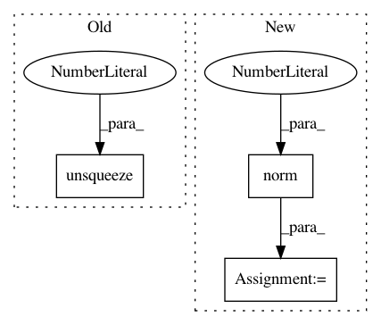

1697ad9a5cb50f61583735f8e442f80fc72a473c,torch_geometric/transform/polar.py,Polar,__call__,#Polar#Any#,9
Before Change
data.weight = spherical
else:
data.weight = torch.cat(
[spherical, data.weight.unsqueeze(1)], dim=1)
return data
After Change
assert pos.dim() == 2
cart = pos[col] - pos[row]
rho = torch.norm(cart, p=2, dim=-1)
rho /= rho.max()
theta = torch.atan2(cart[..., 1], cart[..., 0]) / (2 * PI)
theta += (theta < 0).type_as(theta)
polar = torch.stack([rho, theta], dim=1)
In pattern: SUPERPATTERN
Frequency: 3
Non-data size: 3
Instances
Project Name: rusty1s/pytorch_geometric
Commit Name: 1697ad9a5cb50f61583735f8e442f80fc72a473c
Time: 2018-05-12
Author: matthias.fey@tu-dortmund.de
File Name: torch_geometric/transform/polar.py
Class Name: Polar
Method Name: __call__
Project Name: cornellius-gp/gpytorch
Commit Name: 10cb719041b531cb25e485f928ccb545a475a71a
Time: 2018-09-13
Author: gpleiss@gmail.com
File Name: gpytorch/kernels/rbf_kernel.py
Class Name: RBFKernel
Method Name: forward
Project Name: rusty1s/pytorch_geometric
Commit Name: 1697ad9a5cb50f61583735f8e442f80fc72a473c
Time: 2018-05-12
Author: matthias.fey@tu-dortmund.de
File Name: torch_geometric/transform/spherical.py
Class Name: Spherical
Method Name: __call__